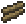
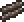

Древесина — основной и самый распространенный предмет в Terraria. Существуют 9 видов древесины и из всех можно крафтить предметы, отличающиеся только внешним видом.(Исключение - Дерево династии) Броня из разных видов древесины отличается защитой, а оружие — уроном. Также существует два вида декоративной древесины, Живая древесина и живое дерево махагони, которые нельзя добыть, но можно поставить с помощью соответствующих предметов: Ветвь живого дерева и Ветвь живой махагони.
 Обычная древесина (Wood) (ID:9) — самый распространённый вид древесины. Выпадает из обычных деревьев, которые растут в лесу. Используется как материал для создания мебели на станке из живой древесины.
Обычная древесина (Wood) (ID:9) — самый распространённый вид древесины. Выпадает из обычных деревьев, которые растут в лесу. Используется как материал для создания мебели на станке из живой древесины.
 Махагони (Rich Mahogany) (ID:620) — вид древесины, который встречается в джунглях (иногда можно встретить деревья и в подземных джунглях). Отличается от остальных видов древесины цветом, наименованием и внешним видом вещей из нее.
Махагони (Rich Mahogany) (ID:620) — вид древесины, который встречается в джунглях (иногда можно встретить деревья и в подземных джунглях). Отличается от остальных видов древесины цветом, наименованием и внешним видом вещей из нее.
 Древесина тьмы (Shadewood) (ID:911) — вид древесины,добывается из деревьев кримзона. Не распространяет родной биом. Отличается от остальных видов древесины цветом, наименованием и внешним видом вещей из нее.
Древесина тьмы (Shadewood) (ID:911) — вид древесины,добывается из деревьев кримзона. Не распространяет родной биом. Отличается от остальных видов древесины цветом, наименованием и внешним видом вещей из нее.
 Эбеновая древесина (Ebonwood) (ID:619) — вид древесины, добывается из деревьев искажения. Не распространяет родной биом. Отличается от остальных видов древесины цветом, наименованием и внешним видом вещей из нее.
Эбеновая древесина (Ebonwood) (ID:619) — вид древесины, добывается из деревьев искажения. Не распространяет родной биом. Отличается от остальных видов древесины цветом, наименованием и внешним видом вещей из нее.
Жемчужная древесина (Pearlwood) (ID:621) — вид древесины, добывается из деревьев святых земель. Не распространяет родной биом. Отличается от остальных видов древесины цветом, наименованием и внешним видом вещей из нее.
Жуткая древесина (Spooky Wood) (ID:1729) — вид древесины, выпадает с сплинтерлинга или с траурного дерева во время тыквенной луны. Используется для создания жуткой брони, так же из неё можно сделать почти все тоже самое, что делается из обычной древесины.
Живая древесина (Living Wood) — декоративный блок, добыть её нельзя, но можно поставить с помощью ветви живого дерева, если в инвентаре есть обычная древесина. Она может находиться в сундуке из живой древесины под громадным деревом. При попытке её добыть, падает обычная древесина.
Живая древесина махагони (Living Mahogany Wood) — декоративный блок. Также как и живую древесину нельзя добыть. Можно поставить с помощью ветви живой махагони, при этом тратится древесина махагони. Можно найти в увитых плющом сундуках. При разрушении падает древесина махагони.
 Дерево династии (Dynasty Wood) (ID:2260) — вид древесины, который можно купить у странствующего торговца. Единственный вид древесины имеющий стоимость. Цена при продаже — 10
Дерево династии (Dynasty Wood) (ID:2260) — вид древесины, который можно купить у странствующего торговца. Единственный вид древесины имеющий стоимость. Цена при продаже — 10 .
.
Северная древесина (Boreal Wood) (ID:2503) — вид древесины, который встречается только в снежном биоме. Отличается от остальных видов древесины цветом, наименованием и внешним видом вещей из неё.
 Пальмовая древесина (Palm Wood) (ID:2504) — вид древесины, который встречается только на пляже. Отличается от остальных видов древесины цветом, наименованием и внешним видом вещей из неё. Пальмы обычно растут на пляже в небольшом количестве (2-6 деревьев), но их можно вырастить с помощью желудей если посадить их в песок, причём не важно: будет ли он на краю карты или в середине — пальмы вырастут везде. Однако, если сажать жёлуди в кровавый, эбонитовый или перлитовый песок, то выросшие пальмы будут давать не пальмовую древесину, а, соответственно, древесину тьмы, эбонитовую или перлитовую древесину. С самих пальм жёлуди падают в количестве 1 шт.
Пальмовая древесина (Palm Wood) (ID:2504) — вид древесины, который встречается только на пляже. Отличается от остальных видов древесины цветом, наименованием и внешним видом вещей из неё. Пальмы обычно растут на пляже в небольшом количестве (2-6 деревьев), но их можно вырастить с помощью желудей если посадить их в песок, причём не важно: будет ли он на краю карты или в середине — пальмы вырастут везде. Однако, если сажать жёлуди в кровавый, эбонитовый или перлитовый песок, то выросшие пальмы будут давать не пальмовую древесину, а, соответственно, древесину тьмы, эбонитовую или перлитовую древесину. С самих пальм жёлуди падают в количестве 1 шт.
Примчечания
-
Бесконечный источник древесины — джунгли. Можно сделать их недалеко от дома, дабы не бегать по полдня туда и обратно — для этого нужны грязь и семена травы джунглей. Деревья будут расти на этой траве произвольно, не нуждаясь ни в каких жёлудях.
-
Древесина не имеет ценности у торговцев. Однако можно создавать вещи из неё и продавать. Выгоднее всего создавать и продавать стулья (~7,5 медных монет за 1 блок дерева).
-
Ветвь живого дерева ставит живую древесину, используя обычную древесину.
-
С помощью станка из живой древесины используя обычную древесину можно изготовить столы, двери, стулья и сундуки (из живого дерева).
-
С обновления 1.2 древесные блоки разрушаются не топором, а киркой (в то время как сами деревья срубаются топором).
-
Оружие и броня сделанные из разной древесины имеют разные характеристики. Например, меч из обычной древесины нанесёт 7 ед. урона, из северной или красной 8 ед. урона, а меч из мрачной древесины нанесёт 10 ед.урона.